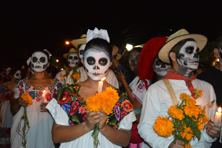
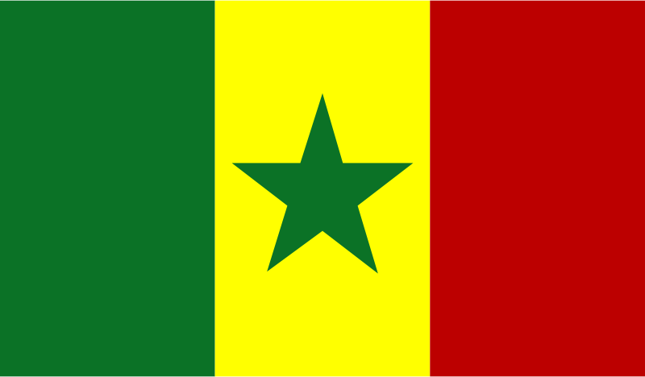
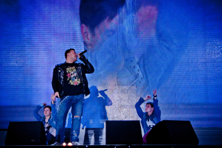
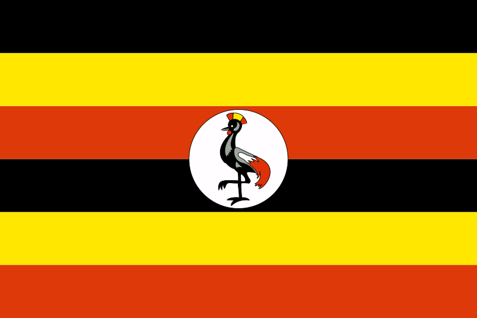
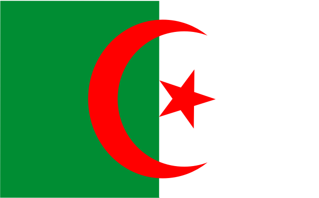
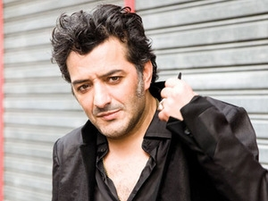

Ozomatli aus den USA
Ozomatli: Cumbia de los Muertos
Album: Ozomatli
Die Band Ozomatli, bestehend aus vier Mexikanern, einem Schotten und einem Japaner, war mit Carlos Santana auf Tournee. Der Song „Cumbia de los Muertos“ handelt von den Toten, denen in Mexiko am „Día de los Muertos“ („Tag der Toten“) mit Tanz und Musik gedacht wird.

Bildquelle: Pixabay
Punjabi Crew aus Indien
Punjabi Crew:
Ni Jattiye De Dabka
Album: Ruff 'N' Tuff
Die Punjabi Crew ist eine Band, die von indischen Migranten aus England gegründet wurde. Der Begriff „Punjabi“ bezeichnet eine indogermanische Sprache. Der Musikstil, den die Band spielt, heißt „Bahra“ und ist fester Bestandteil der englischen Musikszene.
Youssou N'Dour aus dem Senegal
Youssou N'Dour:
Birima
Album: Joko (The Link)
Youssou N´Dour ist ein afrikanischer Superstar und gilt als einer der einflussreichsten Künstler Afrikas. Er arbeitete u.a. mit Wyclef Jean zusammen. Seine kommerziell erfolgreichste Single heißt „7 seconds“, ein Duett mit der schwedischen Sängerin Neneh Cherry. Neben seiner musikalischen Karriere war Youssou N´Dour im Senegal Minister für Kultur und Tourismus.
Bildquelle: Wikimedia
Color Humano aus Argentinien
Color Humano:
Guapa
Album: Burundanga
Die Rockband Color Humano („menschliche Farbe“) war besonders in den 70er und 90er Jahren aktiv. Der Name der Band entstammt aus einem Song, den ein Mitglied der Band für sie komponierte.
Ruki wwerch aus Russland
 Ruki wwerch:
Ruki wwerch:
Ruki wwerch
Album: Zdravstvuj, Eto Ja
Ruki wwerch („Hände hoch“) ist bis heute eine der erfolgreichsten russischen Dancegruppen. Die Band produziert vor allem Musik aus dem Dance-Bereich, kombiniert mit einfachen Melodien. Im Jahr 2006 trennte sich die Band, feierte jedoch nur 2 Jahre später ihr Comeback.

Bildquelle: Wikimedia
Geoffrey Oryema aus Uganda
Geoffrey Oryema:
Mara
Single: Mara
Der Künstler Geoffrey Oryema floh Ende der 70er Jahre vor der Diktatur Idi Admins aus Uganda nach Paris. Dort wurde er nach einer Weile von Peter Gabriel entdeckt, der ihm dabei half, sein erstes Album „Exile“ zu produzieren und zu veröffentlichen.
Aşkın Nur Yengi aus der Türkei
 Aşkın Nur Yengi:
Aşkın Nur Yengi:
Yabani
Album: Haberci
Aşkın Nur Yengi war bereits mit 12 Jahren Teil eines Orchesters. Sie nahm am türkischen Vorentscheid für den Eurovision Song Contest teil, gewann in ihrer Heimat zahlreiche Musikpreise und veröffentlichte einige Hits.
Rachid Taha aus Algerien
Rachid Taha:
Ida
Single: Ida
Rachid Taha stammt aus Algerien und lebt in Frankreich. In seiner Musik vermischt er arabische Einflüsse mit House-, Techno- und Rock-Elementen. In seinen Texten wendet er sich gegen Rassismus und Vorurteile.

Bildquelle: Wikimedia